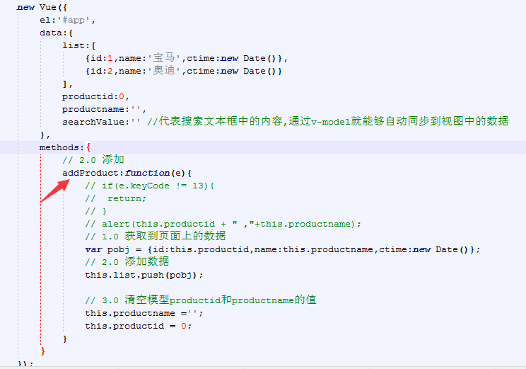
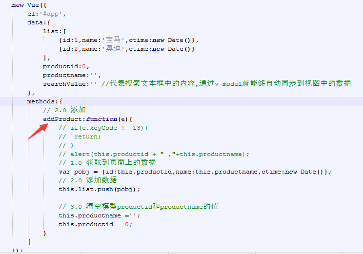
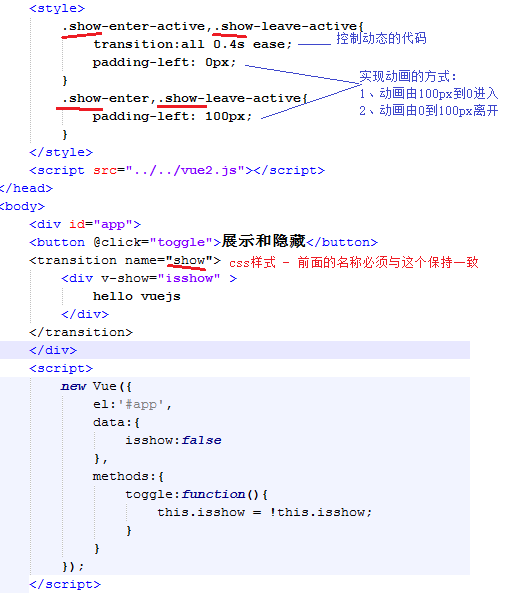
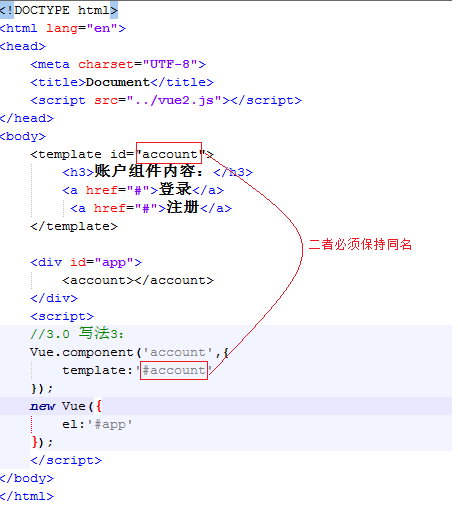
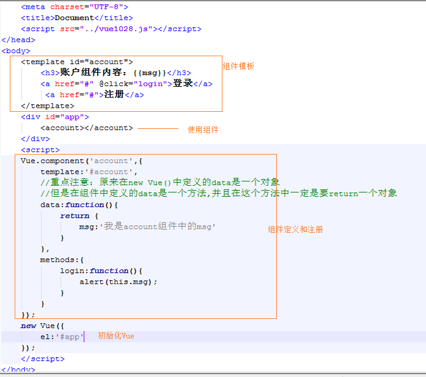
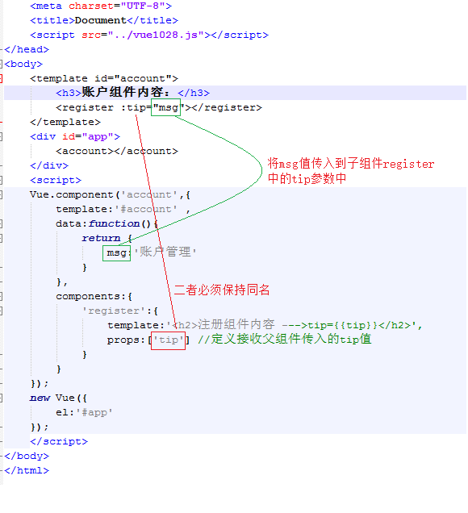
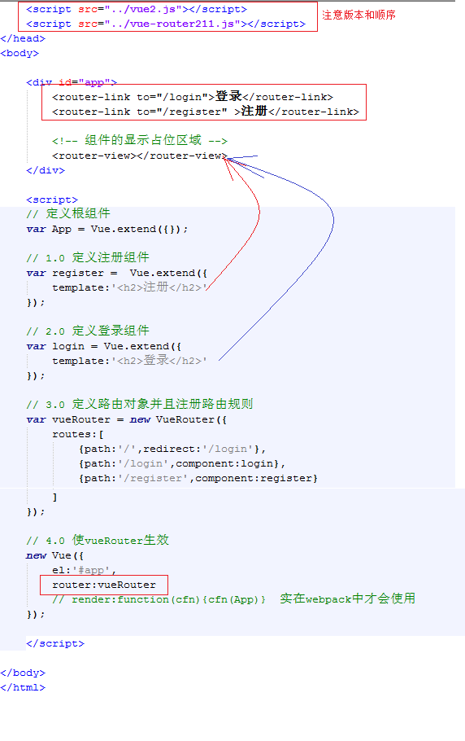

- Vue中的 MVVM

1.4.2 Vue初体验（记住Vue的编写步骤）

1.4.3 Vue常用系统指令
- 插值表达式{{}}：
数据绑定最常见的形式就是使用 “Mustache” 语法（双大括号）的文本插值 例如：<span>Message: {{ msg }}</span> Mustache 标签将会被替代为对应数据对象上 msg 属性（msg定义在data对象中）的值。 无论何时，绑定的数据对象上 msg 属性发生了改变，插值处的内容都会更新。 {{}}对JavaScript 表达式支持，例如： {{ number + 1 }} {{ ok ? 'YES' : 'NO' }} {{ message.split('').reverse().join('') }} 但是有个限制就是，每个绑定都只能包含单个表达式，如下表达式无效： <!-- 这是语句，不是表达式 --> {{ var a = 1 }} <!-- 流控制也不会生效，请使用三元表达式 --> {{ if (ok) { return message } }}v-text
v-text可以将一个变量的值渲染到指定的元素中,例如： <div v-text="msg"></div> new Vue({ data:{ msg:'hello ivan' } }); 输出结果： <div>hello ivan</div>- v-html
双大括号和v-text会将数据解释为纯文本，而非 HTML 。 为了输出真正的 HTML ，你需要使用 v-html 指令： 例如：<div v-html="rawHtml"></div> new Vue({ data:{ rawHtml:'<h1>hello ivan</h1>' } }) 被插入的内容都会被当做 HTML,但是对于没有HTML标签的数据绑定时作用同v-text和{{}} 注意：使用v-html渲染数据可能会非常危险，因为它很容易导致 XSS（跨站脚本） 攻击，使用的时候请谨慎，能够使用{{}}或者v-text实现的不要使用v-html- v-cloak
v-cloak指令保持在元素上直到关联实例结束编译后自动移除，v-cloak和 CSS 规则如 [v-cloak] { display: none } 一起用时，这个指令可以隐藏未编译的 Mustache 标签直到实例准备完毕。 通常用来防止{{}}表达式闪烁问题 例如： <style> [v-cloak] { display: none } </style> <!-- 在span上加上 v-cloak和css样式控制以后，浏览器在加载的时候会先把span隐藏起来，知道 Vue实例化完毕以后，才会将v-cloak从span上移除，那么css就会失去作用而将span中的内容呈现给用户 --> <span v-cloak>{{msg}}</span> new Vue({ data:{ msg:'hello ivan' } })v-model以及双向数据绑定
1、在表单控件或者组件上创建双向绑定 2、v-model仅能在如下元素中使用： input select textarea components（Vue中的组件） 3、举例： <input type="text" v-model="uname" /> new Vue({ data:{ uname:'' //这个属性值和input元素的值相互一一对应，二者任何一个的改变都会联动的改变对方 } }) 4、修饰符（了解）： .lazy - 取代 input 监听 change 事件 .number - 自动将输入的字符串转为数字 .trim - 自动将输入的内容首尾空格去掉v-bind
1、作用：可以给html元素或者组件动态地绑定一个或多个特性，例如动态绑定style和class 2、举例： <img v-bind:src="imageSrc"> <div v-bind:class="{ red: isRed }"></div> <div v-bind:class="[classA, classB]"></div> <div v-bind:class="[classA, { classB: isB, classC: isC }]"> <div v-bind:style="{ fontSize: size + 'px' }"></div> <div v-bind:style="[styleObjectA, styleObjectB]"></div> 3、缩写形式 <img :src="imageSrc"> <div :class="{ red: isRed }"></div> <div :class="[classA, classB]"></div> <div :class="[classA, { classB: isB, classC: isC }]"> <div :style="{ fontSize: size + 'px' }"></div> <div :style="[styleObjectA, styleObjectB]"></div>v-for
```
1、作用：通常是根据数组中的元素遍历指定模板内容生成内容 2、用法举例：
<div v-for="item in items"> {{ item.text }} </div> new Vuew({ data:{ items:[{text:'1'},{text:'2'}] } });3、可以为数组索引指定别名（或者用于对象的键）：
Vue1.0写法: <div v-for="(index,item) in items"></div> <div v-for="(key,val) in user"></div> new Vue({ data:{ items:[{text:'1'},{text:'2'}], user:{uname:'ivan',age:32} } }); Vue2.0写法: <div v-for="(item, index) in items"></div> <div v-for="(val, key) in user"></div> <div v-for="(val, key, index) in user"></div> new Vue({ data:{ items:[{text:'1'},{text:'2'}], user:{uname:'ivan',age:32} } }); 4、v-for 默认行为试着不改变整体(为了性能考虑的设计)，而是替换元素。迫使其重新排序的元素,在Vue2.0版本中需要提供一个 key 的特殊属性，在Vue1.0版本中需要提供一个 track-by="$index": Vue2.0写法： <div v-for="item in items" :key="item.id"> {{ item.text }} </div> Vue1.0写法： <div v-for="item in items" track-by="$index"> {{ item.text }} </div>5、vue1.0与vue2.0对于v-for使用区别总结：
1、vue1.0中有$index ，而vue2.0中将$index移除 2、vue1.0中 (index,item) in list 而 vue2.0 变成了 (item,index) in list的写法 3、vue1.0中使用 track-by来标记dom对象的唯一性，vue2.0中改成了 :key
- v-if
-
1、作用：根据表达式的值的真假条件来决定是否渲染元素，如果条件为false不渲染（达到隐藏元素的目的），为true则渲染。在切换时元素及它的数据绑定被销毁并重建
2、示例：
<!-- Handlebars 模板 -->
{{#if isShow}}
<h1>Yes</h1>
{{/if}}
通常我们使用写法居多：
<h1 v-if="isShow">Yes</h1>
也可以用 v-else 添加一个 “else” 块：
<h1 v-if="isShow">Yes</h1>
<h1 v-else>No</h1>
注意：v-else 元素必须紧跟在 v-if 元素否则它不能被识别。
new Vue({
data:{
isShow:true
}
});
- v-show
-
1、根据表达式的真假值，切换元素的 display CSS 属性，如果为false，则在元素上添加 display:none来隐藏元素，否则移除display:none实现显示元素
2、示例：
<h1 v-show="isShow">Yes</h1>
new Vue({
data:{
isShow:true
}
});
3、v-if和v-show的总结：
v-if和v-show 都能够实现对一个元素的隐藏和显示操作,但是v-if是将这个元素添加或者移除到dom中，而v-show
是在这个元素上添加 style="display:none"和移除它来控制元素的显示和隐藏的
- v-on
-
1、作用：绑定事件监听，表达式可以是一个方法的名字或一个内联语句，如果没有修饰符也可以省略，用在普通的html元素上时，只能监听 原生 DOM 事件。用在自定义元素组件上时，也可以监听子组件触发的自定义事件。
2、常用事件：
v-on:click
v-on:keydown
v-on:keyup
v-on:mousedown
v-on:mouseover
v-on:submit
....
3、v-on提供了很多事件修饰符来辅助实现一些功能，例如阻止冒泡等
事件修饰符有如下：
.stop - 调用 event.stopPropagation()。
.prevent - 调用 event.preventDefault()。
.capture - 添加事件侦听器时使用 capture 模式。
.self - 只当事件是从侦听器绑定的元素本身触发时才触发回调。
.{keyCode | keyAlias} - 只当事件是从侦听器绑定的元素本身触发时才触发回调。
.native - 监听组件根元素的原生事件。
4、示例：
<!-- 方法处理器 -->
<button v-on:click="doThis"></button>
<!-- 内联语句 -->
<button v-on:click="doThat('hello', $event)"></button>
<!-- 缩写 -->
<button @click="doThis"></button>
<!-- 停止冒泡 -->
<button @click.stop="doThis"></button>
<!-- 阻止默认行为 -->
<button @click.prevent="doThis"></button>
<!-- 阻止默认行为，没有表达式 -->
<form @submit.prevent></form>
<!-- 串联修饰符 -->
<button @click.stop.prevent="doThis"></button>
5、v-on的缩写形式：可以使用@替代 v-on:
<button @click="doThis"></button>
### 1.4.4 利用系统指令实现品牌管理案例
- 目的
通过案例熟悉Vue系统指令的用法和结构的写法练习，做到知识点的巩固和学会应用，并且在案例的扩展需求中，学习Vue新知识点，做到先有需求，再有知识点学习，最后到知识点的应用，让学员学习知识点的同时学会知识点的应用
- 实现品牌列表数据展示
-
+ 效果

+ 代码

- 实现品牌数据添加
-
+ 效果

+ 代码


- 实现品牌数据删除
+ 效果

+ 代码


- 实现根据品牌名称过滤符合条件的数据
+ 效果

+ 代码

### 1.4.5 Vue在Chrome浏览器的调试工具Vue-Devtools
- 作用
```html
Vue-Devtools是Chrome浏览器的一个扩展，通过Vue-Devtools可以实现在Chrome浏览器的调试工具栏中查看到Vue开发页面的相关数据对象，方法，事件，状态信息，方便程序员监控和调试解决问题
地址
GitHub地址：https://github.com/vuejs/vue-devtools Chrome插件地址：https://chrome.google.com/webstore/detail/vuejs-devtools/nhdogjmejiglipccpnnnanhbledajbpd?hl=zh-CN通过Chrome插件地址安装插件(注意：这种方式需要翻墙)
1、在Chrome浏览器中打开地址：https://chrome.google.com/webstore/detail/vuejs-devtools/nhdogjmejiglipccpnnnanhbledajbpd?hl=zh-CN
2、点击里面的“+ 添加至CHROME” 按钮即可安装插件
3、安装以后，在Chome浏览器中打开使用Vue开发的站点后按F12打开调试工具即可看到Vue调试工具

- 通过Vue-DevTools源码安装（需要先安装node.exe）
- 1、https://nodejs.org/en/ 下载node.exe安装
- 2、去https://github.com/vuejs/vue-devtools 下载到文件
- 3、进入vue-devtools-master工程 先执行npm install再执行npm run build
- 4、进入vue-devtools-master\shells\chrome文件夹中修改mainifest.json 中的persistant为true
- 5、打开谷歌浏览器设置--->扩展程序-->勾选开发者模式--->加载已解压的扩展程序--->选择“vue-devtools-master\shells下的chrome”文件夹，至此恭喜已经安装成功！
1 v-on按键修饰符
1.1 作用说明
文档地址：http://cn.vuejs.org/v2/guide/events.html#按键修饰符
在监听键盘事件时，我们经常需要监测常见的键值。 Vue 允许为 v-on 在监听键盘事件时添加按键修饰符：
.enter
.tab
.delete (捕获 “删除” 和 “退格” 键)
.esc
.space
.up
.down
.left
.right
1.0.8+ 支持单字母按键别名。
###1.2 可以自定义按键别名
在Vue2.0 中默认的按键修饰符是存储在 Vue.config.keyCodes中
// 例如在Vue2.0版本中扩展一个f1的按键修饰符写法：
Vue.config.keyCodes.f1 = 112
在1.0.17+ 中默认的按键修饰符是存储在Vue.directive('on').keyCodes中
// 例如在Vue1.0中扩展一个f1的按键修饰符写法：
Vue.directive('on').keyCodes.f1 = 112
1.3 利用v-on的.enter按键修饰符实现品牌管理的新增按钮功能
效果图

实现代码
 

2 自定义指令
当Vue提供的系统指令不能满足需求时，就需要自己定义指令来进行扩展，例如，定义一个v-focus指令来实现文本框的自动获取焦点功能
2.1 自定义属性指令
- 写法格式
定义指令：
Vue.directive('指令ID，不需要增加v-前缀',function(){
//实现指令的业务
this.el //代表使用这个指令的元素对象
});
使用指令(当做一个元素的属性使用)：
<input type="text" v-指令ID />
- （属性指令应用举例）利用自定义属性指令实现自动获取焦点功能
定义指令：
//定义一个 v-focus的属性自定义指令
Vue.directive('focus',function(){
this.el.focus(); //实现文本框的自动获取焦点
});
使用指令：
<input type="text" v-focus />
3 自定义过滤器
- 定义方式
可以在 new Vue({filters：{}})中的filters中注册一个私有过滤器
定义格式：
new Vue({
el:'#app',
filters:{
'过滤器名称':function(管道符号|左边参数的值,参数1,参数2,....) {
return 对管道符号|左边参数的值做处理以后的值
})
}
});
Vue1.0 使用写法：
<span>{{ msg | 过滤器id '参数1' '参数2' .... }}</span>
Vue2.0 使用写法：
<span>{{ msg | 过滤器id('参数1' '参数2' ....) }}</span>
- (应用示例)自定义全局过滤器实现日期格式化
1、 定义全局的日期格式化过滤器：
new Vue({
el:'#app',
data:{
time:new Date()
},
filters:{
//定义在 VM中的filters对象中的所有过滤器都是私有过滤器
datefmt:function(input,splicchar){
var date = new Date(input);
var year = date.getFullYear();
var m = date.getMonth() + 1;
var d = date.getDate();
var fmtStr = year+splicchar+m +splicchar+d;
return fmtStr; //返回输出结果
}
}
});
2、使用
<div id="app">
{{ time | datefmt '-' }} //Vue1.0传参写法
{{ time | datefmt('-') }} //Vue2.0传参写法
</div>
3.2.2 自定义全局过滤器
- 定义方式
可以用全局方法 Vue.filter() 注册一个全局自定义过滤器，它接收两个参数：过滤器 ID 和过滤器函数。过滤器函数以值为参数，返回转换后的值
定义格式：
Vue.filter('过滤器名称', function (管道符号|左边参数的值,其他参数1,其他参数2,....) {
return 对管道符号|左边参数的值做处理以后的值
})
Vue1.0 使用：
<span>{{ msg | 过滤器名称 '参数1' '参数2' .... }}</span>
Vue2.0 使用：
<span>{{ msg | 过滤器名称('参数1' '参数2' ....) }}</span>
- (应用示例)自定义全局过滤器实现日期格式化
1、 定义全局的日期格式化过滤器：
Vue.filter('datefmt',function(input,splicchar){
var date = new Date(input);
var year = date.getFullYear();
var m = date.getMonth() + 1;
var d = date.getDate();
var fmtStr = year+splicchar+m +splicchar+d;
return fmtStr; //返回输出结果
});
2、使用
<div id="app">
{{ time | datefmt '-' }} //Vue1.0传参写法
{{ time | datefmt('-') }} //Vue2.0传参写法
</div>
<script>
new Vue({
el:'#app1',
data:{
time:new Date()
}
});
</script>
1.0 Vue过渡动画
通过 Vue.js 的过渡系统，可以在元素从 DOM 中插入或移除时自动应用过渡效果。Vue.js 会在适当的时机为你触发 CSS 过渡或动画
常用场景有：
1、条件渲染 （使用 v-if）
2、条件展示 （使用 v-show）
3、动态组件
1.0.1 transition的作用
2、 在Vue2.0版本中改变成了由 transition特性的写法变成了 hello
1.0.2 Vue中过渡动画的几种常用写法
利用css控制过渡动画
- Vue2.0写法 
利用animate.css控制过渡动画
- Vue2.0写法

- Vue2.0写法
利用钩子函数控制过渡动画
- Vue2.0 过渡动画API文档：http://cn.vuejs.org/v2/guide/transitions.html
Vue2.0钩子函数
1、过渡动画进入
before-enter 过渡动画进入之前，一般在这个方法中定义目标元素的初始位置
enter 过渡动画进入中，在这个方法中定义目标元素的结束位置
after-enter 过渡动画结束后，通常在这个方法里面重置初始值
enter-cancelled 取消过渡动画时被调用
2、过渡动画离开
before-leave 动画离开之前触发
leave 过渡动画进入中触发
after-leave 过渡动画离开结束后
leave-cancelled 取消过渡动画时被调用
3、使用示例：

2.0 Vue组件
组件（Component）是 Vue.js 最强大的功能之一。组件可以扩展 HTML 元素，封装可重用的代码
2.0.1 组件的定义和注册
写法1：使用Vue.extend方法定义组件，使用 Vue.component方法注册组件

写法2:使用 Vue.component方法定义注册组件一步到位

写法3：将组件内容定义到template模板中

写法4：将组件内容定义到类型为 x-template的script模板中
2.0.2 组件中实现指令以及事件绑定

2.0.3 组件中注册子组件

2.0.4 组件中利用component中的is来实现组件切换
2.0.5 实现父组件传值给子组件

2.0.6 实现子组件传值给父组件
2.0.7 通过v-el获取到dom对象
2.0.8 通过v-ref获取到整个组件的对象

1.0.3 vue-router在 vue2.0中的使用
- 1、请下载匹配Vue2.0版本的vue-router文件
- 2、vue-router使用示例代码 
1.0.5 vue2.0的路由参数定义实现url的传值
- 1、请下载匹配Vue2.0版本的vue-router文件
- 2、vue-router路由参数示例代码
1.0.7 vue2中嵌套路由的写法
- 1、请下载匹配Vue2.0版本的vue-router文件
- 2、vue-router嵌套路由示例代码

2.0.1 watch用法举例
监听data中定义的属性
监听路由对象$route

2.0.2 computed用法举例
监听data中定义的属性

4.0.1 webpack介绍
- webpack是一个资源的打包工具，分为1.0和2.0版本，可以将 .js, .css , image等静态资源当做一个模块来进行打包，那么每一种模块都是有一个对应的 loader来实现
- webpack 1.0版本官网：https://webpack.github.io/docs/usage.html
- webpack 2.0版本官网：https://webpack.js.org/
- 在这个项目中使用webpack 1.14.0
- node环境的安装
webpack是基于nodejs运行的，所以在安装webpack之前必须先安装nodejs环境,安装步骤如下
1、去 https://nodejs.org/en/ 中下载当前操作系统匹配的版本,windows下软件名称通常叫做 node.exe
2、双击node.exe一路安装好，由于node.exe已经包含了npm工具，所以npm也能正常使用了
3、由于直接使用npm install 安装第三方包是去国外网站上下载，有可能会被墙而安装失败，所以我们要将下载源切换到国内淘宝上因此需要利用 npm install nrm -g安装一个全局的nrm
4、安装好nrm以后，在cmd命令面板中输入： nrm use taobao 将下载源切换到淘宝，可以使用 nrm ls 查看当前使用的下载源
5、也可安装淘宝提供的类似于npm的工具 cnpm来替代npm安装node包,安装包命令和npm一样，安装cnpm命令： npm install cnpm -g
4.0.2 webpack中loader介绍
- loader介绍
webpack本身不支持css,less,sass,js,image等相关资源的打包工作的，它仅仅提供了一个基础的框架，在这个框架上借助于相关的loader才可以实现css,less,sass,js,image等相关资源的打包工作
4.0.3 webpack相关配置
在使用loader之前需要在当前项目目录下打开cmd命令面板，输入: npm init 初始化一个 package.json文件来存放相关的 loader包
- .vue组件页面的写法结构
1、<template><div class="tmpl"></div>由于是vue2.0 所以这个里面一定要放一个根元素，可以放vue的指令 v-</template>
2、<script> export default{data:{}} -> new Vue({data:{}}) 就是导出一个 Vue的实例 </script>
3、<style></style> 中的样式是全局的
<style scoped></style> 中的样式是当前组件的
3.0 webpack项目结构中集成vue-router步骤（Vue2.0写法）
1、安装vue-router: npm install vue-router --save
2、在webpack打包入口js文件中(entry指定的那个文件main.js)配置如下
3、在入口App.vue组件中添加如下代码
4、执行 npm run dev 就可以打开系统里面的两个超链接，点击即可实现页面跳转
4.0 Vue移动组件mint-ui使用
Vue拥有很多的第三方开发的PC端或者移动端UI组件，此项目中主要用到了Vue移动端组件：mint-ui
类似的移动端组件还有:
1、vux
- vux关于升级到vue2.0:https://vux.li/?x-page=github_readme#/zh-CN/upgrade-to-2
- vux 组件使用文档：https://vux.li/?x-page=github_readme#/zh-CN/components
- vux 组件效果演示：https://vux.li/demos/v2/?x-page=v2-doc-home#/
- vux github:https://github.com/airyland/vux
2、淘宝团队开发的：SUI
- 地址：http://m.sui.taobao.org/components/#toolbar
3、muse-ui
- 地址：https://museui.github.io/#/gridList
PC端组件：
1、饿了么团队开发的：element
- 地址：http://element.eleme.io/#/zh-CN/component/installation
2、 iView 是一套基于 Vue.js 的开源 UI 组件库，主要服务于 PC 界面的中后台产品
- 地址： http://element.eleme.io/#/zh-CN/component/installation
- iView2 来了，全面支持 Vue.js 2.x：https://www.talkingcoder.com/article/6395692494071220203
4.0.1 mint-ui资源介绍
- 官网：http://mint-ui.github.io/#!/zh-cn
- 在次项目中是与Vue2.0结合使用，所以请看：http://mint-ui.github.io/docs/#!/zh-cn2
4.0.2 安装mint-ui集成到项目中
- 1、利用：npm install mint-ui --save 命令将mint-ui安装到项目中
2、在main.js中全局导入mint-ui和它的css后即可在任何组件的中使用mint-ui组件了
3、举例使用mint-ui的按钮组件：可以参考文档：http://mint-ui.github.io/docs/#!/zh-cn2/button
5.0 Vue中使用MUI
MUI是最接近原生APP体验的高性能前端框架，MUI不依赖任何第三方JS库，压缩后的JS和CSS文件仅有100+K和60+K
我们项目中主要使用它的css布局，对于js特效没有用到
- MUI官网：http://dev.dcloud.net.cn/mui/
- MUI控件使用文档：http://dev.dcloud.net.cn/mui/ui/
- MUI在线Demo：http://www.dcloud.io/hellomui/
hellomui源码下载（完全可以直接拷贝里面的代码来实现自己的功能）：https://github.com/dcloudio/mui
在Vue+webpack项目中集成MUI步骤
1、从 https://github.com/dcloudio/mui/tree/master/dist 中下载所有的资源放到项目的statics\mui目录中
2、在main.js中import mui相关css

3、要实现某个功能只需要按照MUI在线DEMO，找到案例源码页面将效果迁移到项目中
9.0 mian.js文件基本内容结构
通过前面慢慢的演变，main.js文件中的基本内容结构如下：
// 1.0 导入vue包
import Vue from 'vue';
// 2.0 导入 App.vue文件
import App from './App.vue';
// 3.0 vue-router相关的代码
// 3.0.1 导入vue-router这个包
import VueRouter from 'vue-router'; //相当于 <script src="vue-router.js">
// 3.0.2 在Vue对象中通过use()方法来使用vue-router对象
Vue.use(VueRouter);
// 3.0.3 定义路由对象并且初始化路由规则
// 3.0.3.1 导入需要注册的组件
import home from './components/Home.vue';
var vueRouterObj = new VueRouter({
linkActiveClass :'mui-active', //将激活的路由添加一个mui-active类名称
routes:[
{path:'/',redirect:'/Home'},
{path:'/Home',component:home},
]
});
// 4.0 mint-ui的使用
// 4.0.1 导入mint-ui的样式
import 'mint-ui/lib/style.min.css'
// 4.0.2 导入mint-ui的组件包
import mintUI from 'mint-ui'
// 4.0.3 将mintUI对象在Vue中通过use()进行绑定
Vue.use(mintUI);
// 5.0 导入mui的css
import '../statics/mui/css/mui.css'
import '../statics/mui/css/icons-extra.css'
// 6.0 使用vue-resource
// 6.0.1 导入vue-resource
import vueResource from 'vue-resource'
// 6.0.2 使用
Vue.use(vueResource);
import '../statics/css/site.css'
// 最后： 将App中的内容编译解析出来替换index.html中的<div id="app"></div>
new Vue({
el:'#app',
router:vueRouterObj, //使用路由规则对象
// render:function(create){create(App);} es5语法
render:create=>create(App) //es6语法
});
10.0 创建App.vue根组件
App.vue是整个系统的根组件，其他所有组件将来都是通过vue-router控制将此组件中的<router-view></router-view>替换成相应组件的内容
11.0 创建Home.vue根组件和实现
详细内容
1.0 实现首页Home.vue中的功能导航区

2.0 实现新闻列表页面
3.0 实现新闻详情页面
4.0 利用全局过滤器实现日期格式化功能
- 使用 momentjs 实现日期格式化功能
- 由于多个页面都需要这个功能，所以这里采取的是注册一个全局过滤器的方式来提供
5.0 实现评论子组件
详细内容
1.0 图片列表页面
2.0 图片详情页面
3.0 图片详情页面中图片预览
- 图片预览功能使用vue-preview 组件实现
- vue-preview使用帮助地址：https://github.com/LS1231/vue-preview
- 在图文详情页面中的使用
4.0 图片详情页面中集成评论组件
- 关键代码如下
5.0 商品列表页面
- 商品列表使用MUI的图文表格来实现：http://www.dcloud.io/hellomui/examples/slider-table-default.html
5.0 商品详情页面
商品详情页面分为如下区域：
1、轮播图
商品轮播图与首页轮播图的业务其实是一样的，因此这里可以抽出一个子组件来实现轮播功能的复用 步骤： 1、在项目的 subcomm文件夹中创建一个名称为： silder.vue 的组件 2、在silider.vue中实现代码和在图文详情页面中使用：2、购买区
- 购买数量子组件inputNumber.vue的实现
3、图文详情
- 图文详情的数据来源于：http://webhm.top:8899/api/goods/getdesc/图文id
4、商品评论
- 跳转到 subcomm/comment.vue子组件即可
详细内容
1.0 商品数据保存到localStorage中
2.0 实现底部购物车徽章数字改变（
3.0 点击"加入购物车"按钮实现动画功能
4.0 利用路由的编程式导航实现商品图文介绍页面的跳转
4.0 利用路由的编程式导航实现商品图文介绍页面的跳转
5.0 利用watch监听$route实现返回功能的统一实现
6.0 购物车商品列表数据获取
- 实现步骤
- 1、从loacalStorage中获取到所有加入购物车中的商品id和数量
- 2、从 http://webhm.top:8899/api/goods/getshopcarlist/商品id1,商品id2,... 获取到所有的商品数据后展示
- 3、列表中商品的选择开关选择的是mint-ui中的switch组件：http://mint-ui.github.io/docs/#!/zh-cn2/switch